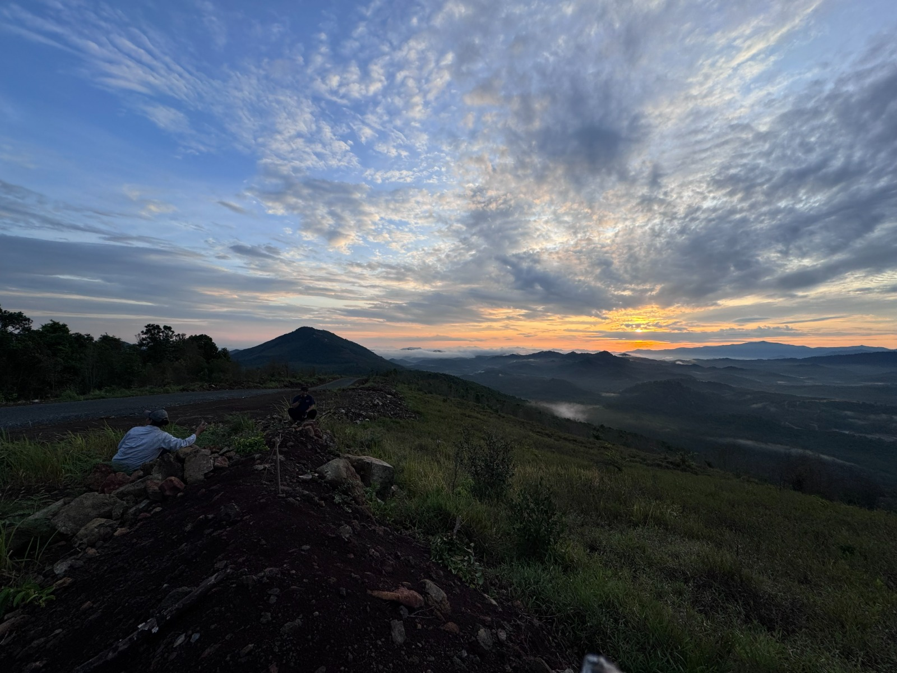
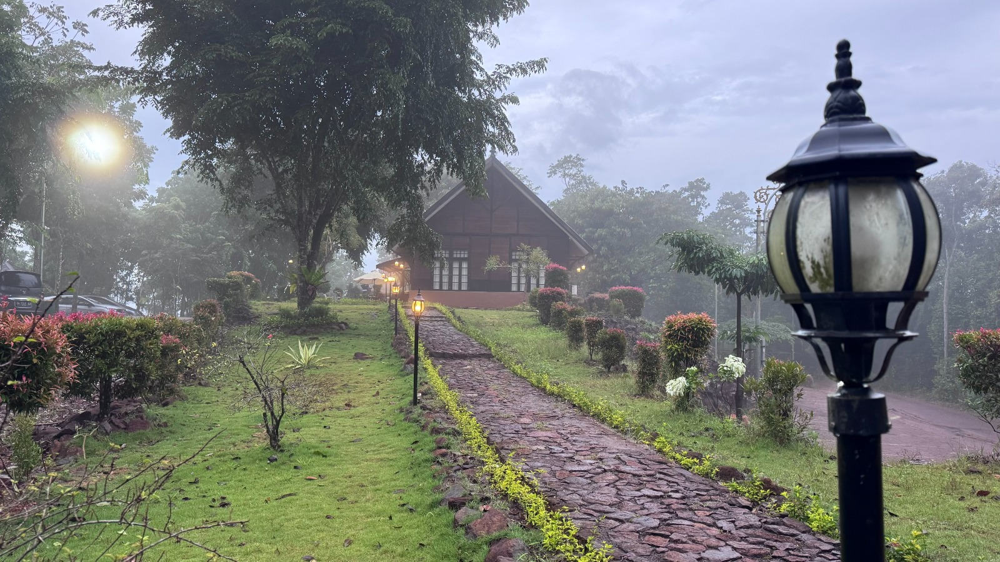

Daya Tarik Tahura Sultan Adam
Tahura Sultan Adam menawarkan berbagai pemandangan dan aktivitas wisata alam yang dapat dinikmati oleh pengunjung.

Waduk Riam Kanan
Waduk Riam Kanan merupakan salah satu pemandangan alam yang menarik di kawasan Tahura Sultan Adam. Pengunjung dapat menikmati panorama perairan yang dikelilingi perbukitan dan pepohonan.

Perbukitan
Kawasan perbukitan menjadi salah satu daya tarik wisata alam di Tahura Sultan Adam. Pemandangan dari kawasan yang lebih tinggi memberikan suasana yang sejuk dan alami.

Kawasan Hutan
Tahura Sultan Adam memiliki kawasan hutan yang menjadi bagian penting dari lingkungan konservasi. Pengunjung dapat menikmati suasana alam dan mengenal keanekaragaman lingkungan di kawasan tersebut.

Camping & Wisata Alam
Suasana alam Tahura juga dapat dimanfaatkan untuk kegiatan wisata alam seperti menikmati pemandangan, bersantai, dan kegiatan luar ruangan sesuai dengan aturan kawasan.

Pemandangan Alam
Perpaduan hutan, perbukitan, dan kawasan perairan menciptakan pemandangan alam yang menarik untuk dinikmati dan diabadikan melalui fotografi.

Villa
Kawasan Tahura terdapat villa untuk tempat beristirahat para pengunjung yang datang mengunjungi Taman Hutan Raya Sultan Adam. Pengunjung bisa menikmati pemandangan di sekitarnya sambil beristirahat.